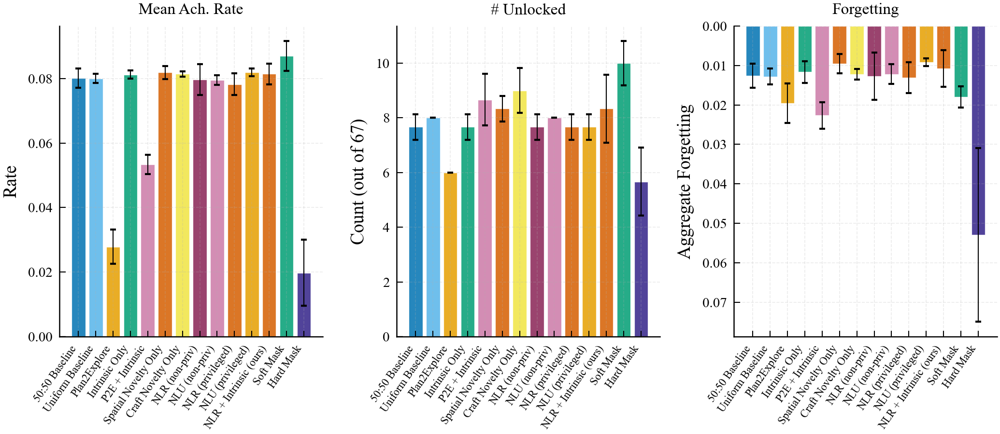
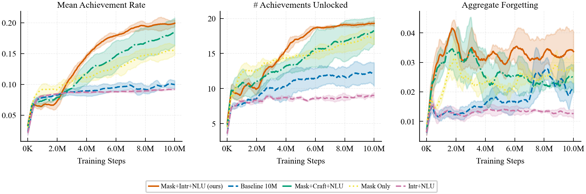
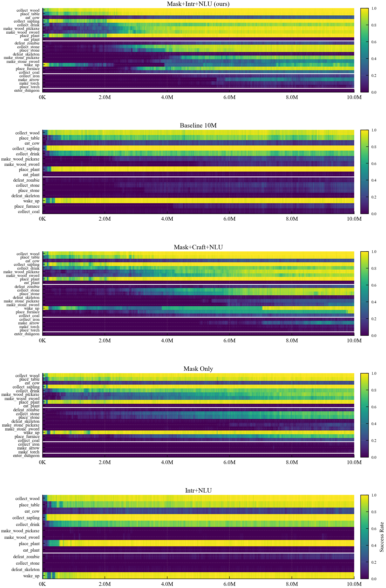

The project
CLIMB is a four-person research project for UCL’s Open-Endedness and General Intelligence module. I led the project and proposed and implemented its three interventions: a soft action-feasibility mask, episodic spatial and inventory novelty rewards, and novelty–learnability–uniform (NLU) replay.
The goal is to help a world-model agent progress through Craftax’s technology tree. The mask addresses actions whose immediate prerequisites are missing; novelty rewards encourage new experience, and replay changes which experience the agent learns from.
What the mask knows
Craftax has 43 discrete actions. The implementation attaches hand-written prerequisite rules to 37 of them. At each real environment step, an extractor provides a 46-dimensional context: inventory counts, player attributes, nearby workstations, the facing tile, and level-related flags.
For example, PLACE_TABLE requires at least two units of wood and a placeable tile ahead. A rule checks immediate feasibility, not whether the action is strategically useful. Actions without a rule receive no mask bias. This is domain knowledge supplied through privileged simulator state during interaction; it is not a mask learned from pixels alone.
From a failed prerequisite to an action probability
For each action, the rules add up a non-negative deficit d(a,c). A missing quantity contributes max(0, required − available). An unsatisfied Boolean or threshold condition contributes one. If every prerequisite is satisfied, the deficit is zero.
The soft mask subtracts λ × d(a,c) from that action’s policy logit before renormalising the distribution: πmask(a|s) = softmax(ℓ(a) − λd(a,c)). The reported default is λ = 5. This changes action selection; it does not add resources or guarantee success.
For PLACE_TABLE, d = max(0, 2 − wood) + 1[the facing tile is not placeable]. With one wood unit and a placeable tile, d = 1 and the logit penalty is −5. With two wood units, the penalty is zero. A finite penalty suppresses the action while retaining it in the mathematical distribution.
The same rules, two sources of context
During real interaction, the mask reads the context extracted from the actual simulator state. During imagination, that state is unavailable. An auxiliary prediction head estimates the context from the RSSM’s deterministic and stochastic features; the same rules then operate on that estimate.
The head is a two-layer MLP predicting a diagonal Gaussian over the context. It learns by negative log-likelihood on observed context targets, using detached RSSM features. It is trained alongside the world model from the start. Imagination-time masking is enabled after a warmup: 50k environment steps in the report, including 10k prefill. The adjusted distribution is used both to sample imagined actions and in the actor loss.
Why soft rather than hard?
A predicted resource count can fall just below a threshold: wood = 1.95 when an action requires 2. A hard mask applies a very large negative bias to any positive deficit, effectively removing that action. The soft mask gives a deficit of 0.05 and a penalty of only −0.25 at λ = 5.
This lets the agent keep considering a near-feasible action when the world model or context head makes a small error. It is a design motivation; the experiment also tests hard masking directly. In the 1M-step comparison, hard masking performs poorly (MAR 0.019 ± 0.011). Soft masking reaches 0.087 ± 0.004 versus the baseline’s 0.079 ± 0.003; that short-run difference is not statistically decisive with three seeds.
The example below isolates the probability calculation. It uses three equal-logit illustrative actions, not the trained 43-action policy, and is not experimental data.
Try the soft mask
- PLACE_TABLE deficit
- 0.05
- Soft logit bias
- -0.25
PLACE_TABLE probability
Try wood = 1.95: the deficit is small, so a soft mask applies a mild penalty. A hard mask removes the action whenever the deficit is positive.
Illustration only: three actions start with equal logits. The other two have no penalty. This is not the trained Craftax policy or an experimental result.

What changes over longer training?
At 10M environment steps, the course report gives mean achievement rate (MAR) of 0.199 ± 0.005 for the full mask + intrinsic + NLU method, against 0.100 ± 0.006 for the matched 50:50 replay baseline. These are mean ± standard deviation across three seeds, for the final-checkpoint metrics in the report.
The mask-only ablation reaches 0.155 ± 0.008. Intrinsic rewards + NLU without the mask reaches 0.092 ± 0.001. The full method therefore benefits from more than the isolated mask effect in these tested settings. The ablations do not independently identify every interaction between spatial novelty, inventory novelty and replay.
The original report figure below shows achievement rate, distinct achievements unlocked and aggregate forgetting together. The full method has higher aggregate forgetting as well as more progress; this is not a claim of uniform improvement on every metric.

Which achievements become more reliable?
The report’s achievement heatmap shows how individual success rates evolve. It complements the aggregate MAR: the full method reaches and repeats a broader set of crafting and progression achievements than the baseline. The heatmap is descriptive evidence of what was achieved, not proof that one particular mechanism caused each improvement.

What I take from it
Feasibility knowledge can make exploration more productive, while imperfect predictions make absolute constraints risky. The reliance on imagined context is also one reason I became interested in diagnosing world models: when a constraint depends on a model’s internal estimate, we need to understand where that estimate becomes unreliable.
All reported results are from Craftax-Symbolic with three seeds. The feasibility extractor and rule set are environment-specific; transfer to environments without privileged state has not been established. Episodic return contains intrinsic bonuses in shaping-enabled configurations, so the page focuses on achievement metrics. I am project lead and first author of the course report.
Updated November 2026